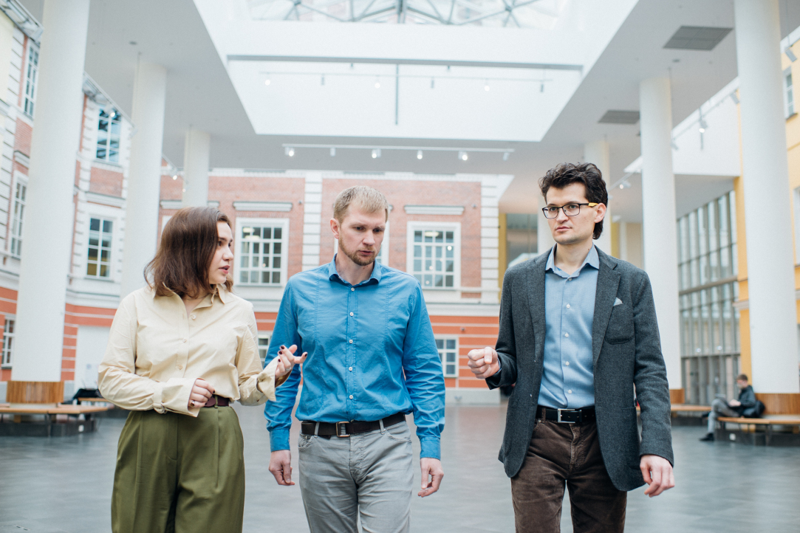

Добро пожаловать в Высшую школу экономики
История создания и развития
27 ноября 1992 года Егор Гайдар, который в это время находился на должности исполняющего обязанности председателя Правительства РФ, подписал Постановление Правительства РФ о создании Высшей школы экономики. Спустя 4 года, в 1996 году школа приобрела статус университета. Все это время она находилась в ведомстве Министерства экономического развития, но в 2008 была уже переведена в ведомство Правительства Российской Федерации. Спустя год, в 2009 году, школа вновь сменила название, получив новый статус. С этих пор она стала именоваться Национальным Исследовательским Университетом «Высшей Школой Экономики», название сохранилось и по сей день.
Постепенно в состав школы стали входить дополнительные институты – так 2012 год ознаменовался вхождением в состав НИУ ВШЭ Московского Института Математики (МИЭМ). Высшая Школа Экономики стала первым учебным заведением в России, где появилась академическая аспирантура.
На сегодняшний день школа экономики в Москве имеет достаточно обширный учебный комплекс, в который входят научно-исследовательские и проектно-учебные центры, институты и лаборатории, международные лаборатории, которыми руководят ведущие ученые, несколько кампусов в других городах России, военная кафедра и 28 факультетов в Москве.
Ближайшие мероприятия
14 февраля
Консультации для поступающих на магистерскую программу «Управление исследованиями, разработками и инновациями в компании»
Семинар Аспирантской школы по политическим наукам

15 февраля
Защита кандидатской диссертации Ксении Бондаренко
16 февраля
Семинар проекта "Успех и самостоятельность человека в меняющемся мире"